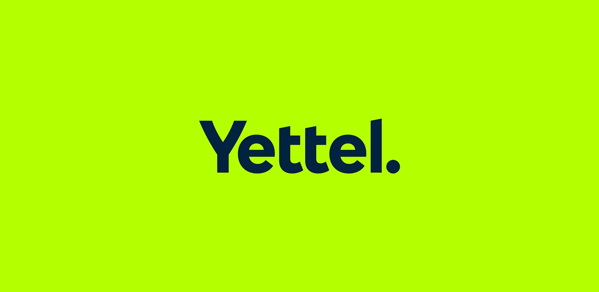
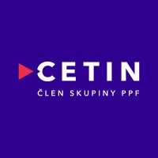
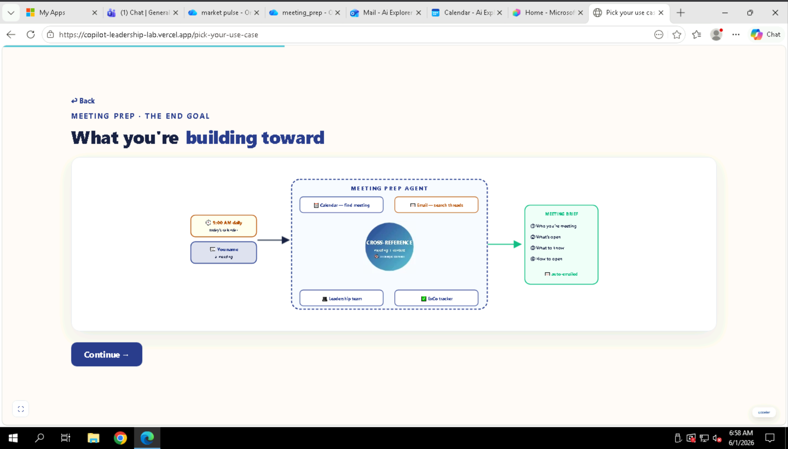
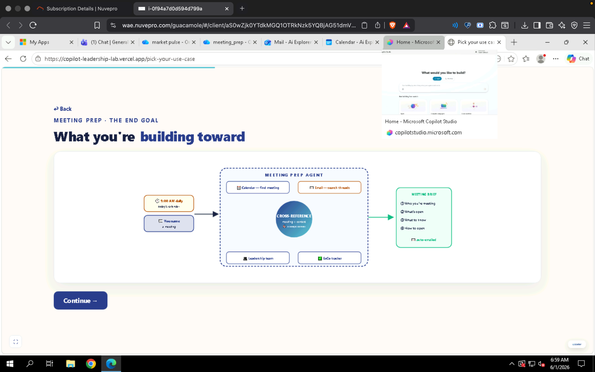

Pick your use case
Find your team, see your mission, and build your agent in Microsoft Copilot Studio — one step at a time.
- 🧭 Understand — your persona & what the agent does
- 🎯 The end goal — what a finished agent returns
- 🛠️ Build it — Setup → Basic → Intermediate → Advanced
- 📣 Publish — share it to Teams when you're done
You lead 4,200 people across CEE markets, mid-transformation to a digital connectivity platform. You walk into meetings across six functions with no time to prep — you need what matters, what's open, and what to say in under two minutes.
Tell the agent which meeting you're about to walk into — or ask what's on your calendar today. It returns a structured brief in under 60 seconds: who you're meeting, what's open, what you need to know, and how to open.
| Document | What it contains | Used by |
|---|---|---|
| CEO_01_Strategic_Context | Company vision, 2026 strategic priorities, cross-functional open items, external competitive context. | Both agents |
| CEO_02_Leadership_Team | ExCo profiles — roles, what each person owns, open items with each leader. | Meeting Prep |
| CEO_03_ExCo_Tracker | Open decisions, pending actions, ExCo meeting agenda and status tracker. | Meeting Prep |
| Work IQ — Email | Live threads: HR departure risk, CFO board prep, CTO overrun, legal/regulatory, strategy, commercial. | Meeting Prep |
| Work IQ — Calendar | Upcoming meetings: ExCo, 1:1 CHRO, Board Prep, Regulatory, Group CEO call, Vendor escalation. | Meeting Prep |


You're the same CEO — but markets move overnight. By the time something reaches you as a formal briefing, it's filtered and the raw signal is gone. Market Pulse gives you that raw signal, through your lens, before anyone else.
You give it a market and a time window — "Hungary, last 7 days" — and it scans three signal layers, read through your strategic lens, and returns a structured brief.
| Document | What it contains | Used by |
|---|---|---|
| CEO_01_Strategic_Context | Company vision, 2026 priorities, cross-functional open items — frames signals in strategic context. | Both agents |
| MP_01_Competitive_Landscape | Magyar Telekom, 4iG, A1, Vivacom, DIGI — recent moves, pricing, enterprise strategy, threat assessment. | Market Pulse |
| MP_02_Regulatory_Watch | Spectrum renewal consultation, Competition Authority review, GDPR audit, net-neutrality enforcement. | Market Pulse |
| Work IQ — Email | Internal threads where your team has already flagged external signals. | Stage 2+ |
| Web Search (live) | Real-time competitor press, regulatory announcements, market news — the live signal layer. | Always |
- Headline — the single most important thing that moved.
- What Moved — 3-5 developments: named actor, what, when, cited source.
- What It Means For Us — tied to your 2026 priorities, by number.
- What To Watch Next — 1-2 things in the next 7-14 days. Early warning.
- Internal Signals (Stage 2+) — what your team already flagged.